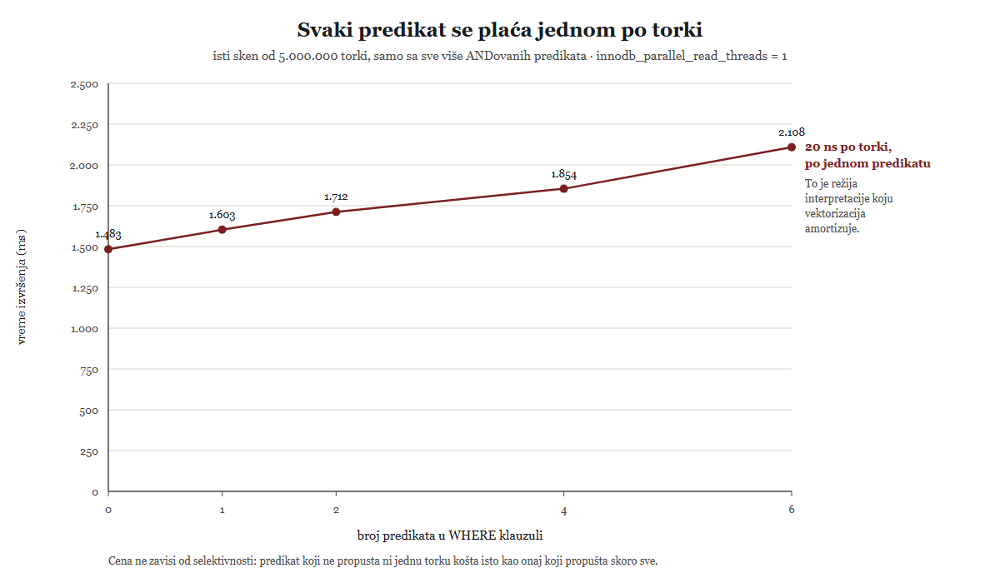

WHERE klauzule.
(examples/06-gde-mysql-ne-prati-obrazac/01-paralelni-sken-granica.sql, medijana od
tri merenja, MySQL 8.4.11.)Lekcija 08 · Poglavlje 6 (Gde MySQL ne prati obrazac)
Poglavlje 5 je pokazalo da izvršilac vraća jednu torku po pozivu
Read(). Ova lekcija od te jedne činjenice pravi tri posledice, i za svaku meri gde
tačno prestaje — jer se poglavlje 6 sastoji od tvrdnji oblika „MySQL nema X", a takva tvrdnja je
tačna samo ako joj se zna granica.
handler API-ja, i gasi ga
jedna jedina WHERE klauzula; (3) MySQL nema deljeni keš plana, ali
ima keš pripremljene naredbe — i to su dve različite stvari.
Iz poglavlja 5 već znaš kako izgleda ugovor izvršioca. Vredi ga pročitati još jednom, ali sada gledajući koliko torki jedan poziv obrađuje:
Jedna torka po pozivu. To je cela definicija izvršavanja torku po torku. Nasuprot tome, vektorizovano izvršavanje znači da operator prima i vraća paket torki (batch), pa se režija poziva i interpretacije izraza raspodeli na ceo paket umesto na jednu torku:
MySQL 8.4 | 1 torka po pozivu Read() — model iteratora, izvršavanje torku po torku |
DuckDB | 2.048 torki po pozivu (STANDARD_VECTOR_SIZE), kolonarno skladištenje |
ClickHouse | 1.024–4.096 torki po pozivu, sa SIMD instrukcijama nad paketom |
PostgreSQL | 1 torka po pozivu — dakle ni PostgreSQL ne vektorizuje |
Odsustvo vektorizacije ne može da se „uključi i isključi" pa da se izmeri razlika — to je arhitektonska odluka, ne prekidač. Ali njena posledica se meri direktno: ako se svaki izraz izračunava jednom za svaku torku, onda svaki dodatni predikat mora da doda približno konstantan iznos po torki, bez obzira na to koliko torki taj predikat propušta.

amount >
999999) košta isto kao onaj koji propušta skoro sve. To je režija interpretacije koju
vektorizovani izvršioci amortizuju obradom paketa torki.
(examples/06-gde-mysql-ne-prati-obrazac/02-cena-po-torki.sql, mereno na MySQL 8.4.11.
Ova figura je samo u lekciji — poglavlje 6 u radu ima kvotu od jedne figure.)Preduslov: baza obrada_upita sa tabelom
wide_events (~5 miliona torki), ista koju koristiš od poglavlja 3. Ništa se ne
menja i ništa ne treba čistiti — samo se čita.
USE obrada_upita; -- Jedna nit, da paralelizam ne bi zamutio sliku (vidi sekciju 2). SET SESSION innodb_parallel_read_threads = 1; -- Bez ijednog predikata. SET @t0 = NOW(6); SELECT COUNT(*) INTO @c FROM wide_events FORCE INDEX(PRIMARY); SELECT '0 predikata', ROUND(TIMESTAMPDIFF(MICROSECOND, @t0, NOW(6))/1000) AS ms; -- Sest predikata nad istim skenom. SET @t0 = NOW(6); SELECT COUNT(*) INTO @c FROM wide_events FORCE INDEX(PRIMARY) WHERE amount > 100 AND priority > 2 AND is_flagged = 0 AND currency <> 'XXX' AND channel <> 'zzz' AND device_type <> 'zzz'; SELECT '6 predikata', ROUND(TIMESTAMPDIFF(MICROSECOND, @t0, NOW(6))/1000) AS ms; -- Kontrola: predikat koji ne propusta gotovo nista. SET @t0 = NOW(6); SELECT COUNT(*) INTO @c FROM wide_events FORCE INDEX(PRIMARY) WHERE amount > 999999; SELECT 'prolazi ~0 torki', ROUND(TIMESTAMPDIFF(MICROSECOND, @t0, NOW(6))/1000) AS ms;
Tri vremena. Ono sa sest predikata je osetno vece od onog bez predikata -- razlika je reda velicine nekoliko stotina milisekundi na pet miliona torki. Treci rezultat je poenta: predikat koji ne propusta nijednu torku traje prakticno isto kao predikat koji propusta skoro sve. Apsolutni brojevi zavise od bafer pula i od masine. Ono sto se tvrdi je NAGIB i to da selektivnost ne pomaze, a ne konkretna vrednost.
Kako se ovo čita: ako bi se izrazi izračunavali nad paketom torki,
cena po torki bi padala sa veličinom paketa i selektivnost bi mogla da preskoči ceo paket
odjednom. Ovako se svaki izraz izračuna jednom za svaku torku koja prođe kroz
Read() — pa i onu koja odmah otpadne. To je merljiv potpis izvršavanja torku po
torku.
handler API-jaOvde je najlakše pogrešiti, jer su obe krajnosti netačne. „MySQL uopšte nema paralelizam" je netačno — postoji sistemska promenljiva koja ga kontroliše. „MySQL paralelizuje upite" je takođe netačno. Tačna tvrdnja je uža od obe, i ima tri uslova.
innodb_parallel_read_threads | sesijska promenljiva, dinamička; na ovom serveru podrazumevano 4 |
| opseg vrednosti | postavljanje na 1024 server prihvata, ali vrati 256 — to je gornja granica za sve sesije zajedno |
| šta paralelizuje | čitanje klasterovanog indeksa, unutar jedne operacije |
| šta ne paralelizuje | izvršavanje plana — stablo iteratora iz poglavlja 5 ostaje jednonitno |
Priručnik ovu mogućnost objašnjava uz CHECK TABLE, ali worklog koji ju je uveo kaže
i za koji upit važi, i to jednom rečenicom koja je za poglavlje 6 zlata vredna:
Dakle: jedan jedini oblik upita. I to je i dalje preširoko rečeno, jer u praksi postoje još dva uslova koja worklog ne pominje — a oba se vide merenjem.
Ovo je najlepša zamka u celom poglavlju. Napišeš SELECT COUNT(*) FROM wide_events,
očekuješ paralelno čitanje, i ne dobiješ ga — jer optimizator uopšte ne čita klasterovani indeks:
Preduslov: ista baza obrada_upita. Samo EXPLAIN,
ništa se ne izvršava.
USE obrada_upita; EXPLAIN SELECT COUNT(*) FROM wide_events; EXPLAIN SELECT COUNT(*) FROM wide_events FORCE INDEX(PRIMARY);
Prvi plan u koloni key NEMA vrednost PRIMARY -- stoji ime nekog malog sekundarnog indeksa (na ovom serveru idx_is_flagged), uz Extra: Using index. Drugi plan, sa FORCE INDEX, ima key: PRIMARY. Oba imaju type: index i istu procenu broja torki.
Kako se ovo čita: za COUNT(*) je svaki indeks
pokrivajući, pa optimizator bira najjeftiniji — a to je najuži sekundarni
indeks, ne klasterovani. Pošto se paralelno čitanje odnosi na klasterovani indeks, podrazumevani
plan ga nikada ni ne dobije. Zato u primerima stoji FORCE INDEX(PRIMARY): to nije
ukras, nego jedini način da se paralelno čitanje uopšte aktivira.
I sada glavno merenje poglavlja. Isti klasterovani sken, jednom bez WHERE klauzule i
jednom sa jednom jedinom, kroz pet vrednosti innodb_parallel_read_threads:
WHERE klauzule.
(examples/06-gde-mysql-ne-prati-obrazac/01-paralelni-sken-granica.sql, medijana od
tri merenja, MySQL 8.4.11.)Preduslov: ista baza. innodb_parallel_read_threads je
sesijska, pa se zatvaranjem veze sama vraća na podrazumevanu vrednost — nema šta da se čisti.
USE obrada_upita; -- Serija A: bez WHERE klauzule. SET SESSION innodb_parallel_read_threads = 1; SET @t0 = NOW(6); SELECT COUNT(*) INTO @c FROM wide_events FORCE INDEX(PRIMARY); SELECT 'A, 1 nit', ROUND(TIMESTAMPDIFF(MICROSECOND, @t0, NOW(6))/1000) AS ms; SET SESSION innodb_parallel_read_threads = 16; SET @t0 = NOW(6); SELECT COUNT(*) INTO @c FROM wide_events FORCE INDEX(PRIMARY); SELECT 'A, 16 niti', ROUND(TIMESTAMPDIFF(MICROSECOND, @t0, NOW(6))/1000) AS ms; -- Serija B: isti sken, plus jedan predikat. SET SESSION innodb_parallel_read_threads = 1; SET @t0 = NOW(6); SELECT COUNT(*) INTO @c FROM wide_events FORCE INDEX(PRIMARY) WHERE amount > 100; SELECT 'B, 1 nit', ROUND(TIMESTAMPDIFF(MICROSECOND, @t0, NOW(6))/1000) AS ms; SET SESSION innodb_parallel_read_threads = 16; SET @t0 = NOW(6); SELECT COUNT(*) INTO @c FROM wide_events FORCE INDEX(PRIMARY) WHERE amount > 100; SELECT 'B, 16 niti', ROUND(TIMESTAMPDIFF(MICROSECOND, @t0, NOW(6))/1000) AS ms;
Serija A: vreme na 16 niti je visestruko manje nego na jednoj. Serija B: dva prakticno ista vremena -- razlika je u granicama suma merenja. Zanimljivo je i da je B na JEDNOJ niti sporije od A na jednoj niti, iako cita isto toliko podataka. Ta razlika je cena predikata iz sekcije 1.
Kako se ovo čita: paralelno čitanje je posao motora,
ispod handler API-ja iz poglavlja 2. Kada nema predikata i nema projekcije,
InnoDB može sam da izbroji torke u više podstabala i vrati serverskom sloju samo zbir — server
nikada ne vidi pojedinačne torke. Čim dodaš WHERE, o predikatu mora da odluči
iterator na serverskom sloju, pa svaka torka mora da pređe granicu kroz handler,
jedna po jedna, u jednoj niti. Granica paralelizma je tačno na šavu iz
poglavlja 2.
EXPLAIN ispisu iz poglavlja 4 nema
nijednog čvora koji bi označavao paralelizam — i to je dobar argument da se izgovori naglas.
Ovo je centralni potez poglavlja i mesto gde je najlakše napisati nešto netačno. Postoje tri različite stvari koje se lako slepe u jednu:
| keš rezultata upita (query cache) | čuvao je rezultate. Zastareo u 5.7.20, uklonjen u 8.0. Ne postoji. |
| deljeni keš plana | čuvao bi planove izvršenja između sesija, kao Oracle-ov deljeni pul. Ne postoji u MySQL-u. |
| keš pripremljene naredbe | čuva unutrašnju strukturu naredbe po sesiji. Postoji. |
Priručnik je o trećoj stavci sasvim izričit, i ovo je rečenica koju vredi citirati doslovno:
A o tome šta se kešira, priručnik kaže „internal structure" — dakle stablo raščlanjivanja sa razrešenim kolonama, ne plan izvršenja:
Citat kaže šta se kešira, ali ne kaže izričito da se plan ne kešira. To možeš da dokažeš sam, alatom iz poglavlja 4c: ako se plan kešira, drugo izvršenje iste pripremljene naredbe nema šta da traguje. Ako se ne kešira, svako izvršenje ostavlja svoj trag.
Preduslov: baza obrada_upita i pravo da se uključi
optimizer_trace (isto kao u lekciji 06). Na kraju se naredba oslobađa sa
DEALLOCATE PREPARE.
USE obrada_upita; PREPARE s FROM 'SELECT SUM(amount) FROM wide_events WHERE country_code = ?'; -- Sve promenljive PRE ukljucivanja traga: SET naredbe se i same traguju -- i istisnule bi tragove zbog kojih smo dosli. SET @a = 'DE', @b = 'US', @c = 'JP'; SET SESSION optimizer_trace_offset = -3, SESSION optimizer_trace_limit = 3; SET SESSION optimizer_trace = 'enabled=on'; EXECUTE s USING @a; EXECUTE s USING @b; EXECUTE s USING @c; SET SESSION optimizer_trace = 'enabled=off'; SELECT QUERY, LENGTH(TRACE) AS trace_bytes, JSON_EXTRACT(TRACE, '$**.best_access_path.considered_access_paths[0].rows') AS procena_torki, JSON_EXTRACT(TRACE, '$**.best_access_path.considered_access_paths[0].cost') AS cena FROM information_schema.OPTIMIZER_TRACE; DEALLOCATE PREPARE s;
TRI reda, po jedan za svako izvrsenje. Svaki ima:
- svoj trag od nekoliko hiljada bajtova (dakle optimizacija se stvarno desila),
- u koloni QUERY vec ZAMENJENU vrednost parametra ('DE', 'US', 'JP'),
- SVOJU procenu broja torki i SVOJU cenu.
Red za 'US' ima procenu i cenu visestruko vece od ostala dva, jer je US
u ovoj tabeli oko 70% podataka a ostale zemlje po ~2%.
Kako se ovo čita: tri traga znače tri optimizacije. Da postoji keš plana, drugo i treće izvršenje ne bi imala šta da upišu u trag. Štaviše, procene se razlikuju zato što se optimizacija radi nad stvarnom vrednošću parametra — MySQL ne pravi generički plan koji bi važio za svaku vrednost. To je jača tvrdnja od „plan nije deljen": plan se iznova izvodi na svakom izvršenju.
Druga strana iste tvrdnje. Kešira se unutrašnja struktura — a to se vidi po tome što promena metapodataka tabele tera server da je odbaci i naredbu pripremi ponovo:
Preduslov: pravo da se kreira i briše tabela u obrada_upita.
Skript pravi malu tabelu t_reprepare i briše je na kraju —
wide_events se ne dira, da se ne pomere statistike na kojima stoje merenja iz
ranijih poglavlja.
USE obrada_upita; DROP TABLE IF EXISTS t_reprepare; CREATE TABLE t_reprepare (id INT PRIMARY KEY, a INT); INSERT INTO t_reprepare VALUES (1,10),(2,20); PREPARE p FROM 'SELECT * FROM t_reprepare'; EXECUTE p; -- dve kolone SELECT VARIABLE_VALUE AS reprepare_pre FROM performance_schema.session_status WHERE VARIABLE_NAME = 'Com_stmt_reprepare'; ALTER TABLE t_reprepare ADD COLUMN b INT; -- promena metapodataka EXECUTE p; -- TRI kolone SELECT VARIABLE_VALUE AS reprepare_post FROM performance_schema.session_status WHERE VARIABLE_NAME = 'Com_stmt_reprepare'; DEALLOCATE PREPARE p; DROP TABLE t_reprepare;
Prvi EXECUTE vraca dve kolone (id, a), a brojac Com_stmt_reprepare je 0. Posle ALTER TABLE-a isti EXECUTE vraca TRI kolone (id, a, b), a brojac je 1. Naredba glasi 'SELECT * FROM t_reprepare' i nije se promenila -- promenilo se ono sto je server od nje napravio.
Kako se ovo čita: da se kešira samo tekst naredbe, brojač ne bi
imao šta da broji. Da se kešira ceo plan, ovo bi bio dokaz da se i plan poništava. Ono što se
zaista vidi jeste da je * bilo razrešeno u listu kolona i
zapamćeno — pa kad se lista kolona promeni, zapamćena struktura više ne važi i mora se
izgraditi ponovo. To je tačno ona „internal structure" iz citata.
Preduslov: dve konekcije. U Workbench-u:
Query > New Tab to Current Server. Ovo je jedini primer u lekciji koji se ne
može pokrenuti iz jednog skripta.
PREPARE s1 FROM 'SELECT 1'; EXECUTE s1;
EXECUTE s1;
Prvi tab: rezultat 1.
Drugi tab: ERROR 1243 (HY000): Unknown prepared statement handler (s1)
given to EXECUTE
Kako se ovo čita: ovo je citat iz priručnika pretvoren u poruku o grešci. Naredba pripremljena u jednoj sesiji ne postoji ni pod kojim imenom u drugoj. Kod Oracle-a bi obe sesije delile isti plan iz deljenog pula; ovde druga sesija mora da plati i raščlanjivanje i optimizaciju iznova.
Ako od cele lekcije zapamtiš samo tri rečenice, neka to budu ove — svaka je formulisana tako da preživi potpitanje:
| §6.1 | MySQL izvršava torku po torku, jer Read() po definiciji vraća jednu torku; merljiva posledica je da svaki predikat košta oko 20 ns po torki bez obzira na selektivnost. |
| §6.2 | MySQL paralelizuje čitanje klasterovanog indeksa za nezaključavajući COUNT(*), a ne izvršavanje plana; jedna WHERE klauzula vraća sve na jednu nit, jer predikat pripada serverskom sloju. |
| §6.3 | MySQL nema deljeni keš plana i nema keš rezultata upita od 8.0, ali ima sesijski keš pripremljene naredbe; plan se iznova izvodi na svakom EXECUTE, nad stvarnom vrednošću parametra. |
innodb_parallel_read_threads. ·
„MySQL je spor jer ne vektorizuje" — meša arhitektonski izbor sa manom, i ne stoji za
transakcioni workload za koji je MySQL i pravljen.
Po jedno pitanje na svaku netrivijalnu tvrdnju lekcije. Klikni odgovor i odmah dobijaš povratnu informaciju.
1. Šta tačno znači da MySQL ne koristi vektorizovano izvršavanje?
Vektorizacija je broj torki po pozivu operatora; Read() po definiciji vraća jednu.
2. Šest predikata je sporije od jednog za oko 500 ms. Šta to pokazuje?
Cena raste sa brojem torki puta broj izraza — oko 20 ns po torki po predikatu.
3. Zašto primeri u sekciji 2 pišu FORCE INDEX(PRIMARY)?
Za COUNT(*) je svaki indeks pokrivajući, pa se bira najuži — a to nije klasterovani.
4. Zašto jedna WHERE klauzula potpuno gasi paralelno čitanje?
Paralelno čitanje živi u motoru, ispod handler-a; predikat pripada serverskom sloju.
5. Tri EXECUTE-a iste naredbe daju tri traga. Šta to dokazuje?
Da je plan keširan, drugo i treće izvršenje ne bi imala šta da upišu u trag.
6. Koja formulacija o keširanju je tačna i branjiva?
Kešira se unutrašnja struktura naredbe, ne plan — i to samo unutar jedne sesije.
7. Šta se dogodilo kad je Com_stmt_reprepare otišao sa 0 na 1?
ALTER TABLE je promenio listu kolona u koju je * bilo razrešeno.
Rezultat: 0 / 0